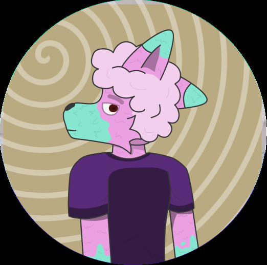

João Pedro Portela Martins
Cursando: Ciência da Computação [1° Período]
Sobre Mim:
Atualmente mais um estudante da CESAR School, visando aprender mais opre as linguagens de programação, sobre computadores em geral e eventualmente engajar no ramo de desenvolvimento de jogos profissionais e/ou indies ou front end.
Com leve conhecimento sobre Typescript e Python, e experiência razoável com LuaU e desenvolvimento de jogos solo